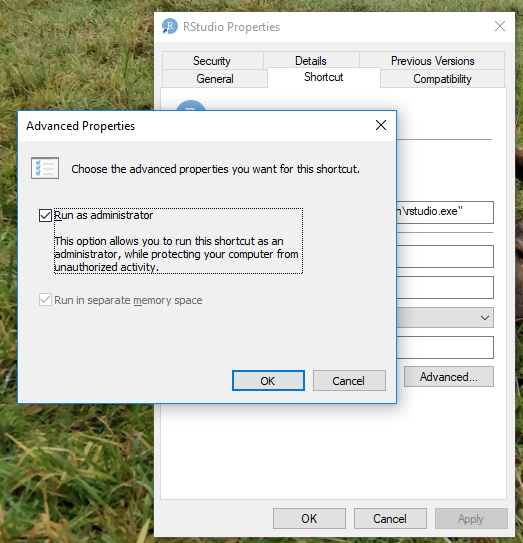

Module 7 Setting up R
R is a programming language and free software environment. The R language is widely used among statisticians and data miners for developing statistical software and data analysis. For a further overview and description of the history of R see Chapter 2 in Peng (2018). R can be run from a terminal but in general you use an IDE (integrated development environment) RStudio for running R and to saving your work.
R and RStudio can either be run from your laptop or using Posit Cloud which run R in the cloud using your browser. During this course it is recommend that you have R and RStudio installed on your laptop and use it to solve your exercises. Moreover, you are going to use the laptop version at the exam. We may use Posit Cloud during the lectures. Some pros and cons of using R in the cloud vs on the laptop are
Cloud (Posit Cloud)
Pros:
- Log in and you are ready to use R.
- No need to download anything.
- Packages easier to install.
- Everything can be run using a browser.
Cons:
- There is a limit on user time and CPU time. You need to pay if need more time.
- Often slower than the desktop version.
- Need an internet connection.
- Risky to use at the exam if the internet connection is slow or is down. Use the laptop version instead.
Pros:
- Can be used without any internet connection.
- No limit on user time and CPU usage.
- Good if computations takes a lot of time.
Cons:
- You need to install R and RStudio to get started.
- Packages must be installed.
- Other needed programs may have to be installed.
- Updates must be installed.
Learning path diagram
Click/hover the nodes to follow links and see details.
If you like a different learning style there is a lot for videos about R online. The videos have been pointed out as extra online supplements in the learning path diagram. However, they are not part of curriculum.
7.1 Learning outcomes
By the end of this module, you are expected to have:
- Installed R and RStudio on your laptop.
- Tested R and RStudio on your laptop.
- Installed some packages on your laptop
- Signed up on Posit Cloud and tested it.
The learning outcomes relate to the overall learning goal number 5 of the course.
7.2 Install R and RStudio
R is a programming language and free software environment. The R language is widely used among statisticians and data miners for developing statistical software and data analysis. For a further overview and description of the history of R see Chapter 2 in Peng (2018). To run R you need to install it on your computer. Moreover, you need the IDE (integrated development environment) RStudio to save your work.
- If you have a pre-existing installation of R and/or RStudio, reinstall both to the latest versions. It can be considerably harder to run old software than new.
- Install R from CRAN (Comprehensive R Archive Network). Install the latest precompiled binary distribution for your operating system (use the links at the top of the CRAN page). I you are using a mac also install Xcode using the terminal and the GNU Fortran compiler see here.
- Install the desktop version of RStudio, a powerful user interface for R.
- Under Windows it is a good idea to always open R with administrator rights:
Add a shortcut for RStudio (e.g. to the taskbar or desktop).
Ctrl+Shift+Right-Click the shortcut and choose Properties:
 Choose Properties
Choose PropertiesUnder Shortcut click Advanced and set Run as administrator

You now always can open RStudio with this shortcut.
7.2.1 Test your installation
Do whatever is appropriate for your OS to launch RStudio. You should get a window similar to the screenshot you have here, but yours will be more boring because you have not written any code or made any figures yet.
Put your cursor in the pane labeled Console, which is where you interact with the live R process. Create a simple object using code like
x <- 2 * 4(followed by enter or return). Then inspect thexobject by typingxfollowed by enter or return. You should see the value 8 print to screen. If yes, you have succeeded in installing R and RStudio.Try to open a new file File > New File > New RMarkdown…. Use the defaults and press OK. Next save the file and compile it using Knit (Ctrl+Shift+K). You have now compiled a document with R code embedded.
{kind=link}
7.2.2 Add-on packages
R is an extensible system and many people share useful codes they have developed as a package via CRAN or GitHub. To install a package from CRAN, for example the dplyr package for data manipulation, one way to do it is in the R console.
By including dependencies = TRUE, we are being explicit and extra careful to install any additional packages the target package, dplyr in the example above is dependent on.
- Install the package tidyverse which is in fact a bundle of packages by running (note this operation may take a long time):
- Check if you have successfully installed tidyverse by loading the package:
- If your install was unsuccessful try to install the packages who fails one by one.
You may also see this short video explaining what packages are.
7.3 Setup and test Posit Cloud
Posit Cloud works as your laptop version except that a workspace with projects for each module already is created.
- Join the Tools for Analytics workspace on Posit Cloud (signup if you have not done it yet).
- Click the Projects link (in the top) and open the project TM7. A personal copy of the project is loaded for you.
- Put your cursor in the pane labelled Console, which is where you interact with the live R process. Create a simple object using code like
x <- 2 * 4(followed by enter or return). Then inspect thexobject by typingxfollowed by enter or return. You should see the value 8 print to screen. - Try to open a new file File > New File > New RMarkdown…. Use the defaults and press OK. Next save the file and compile it using Knit (Ctrl+Shift+K). You have now compiled a document with R code embedded.